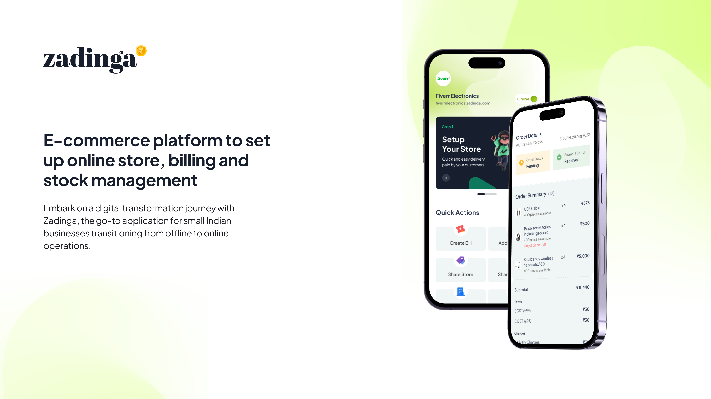
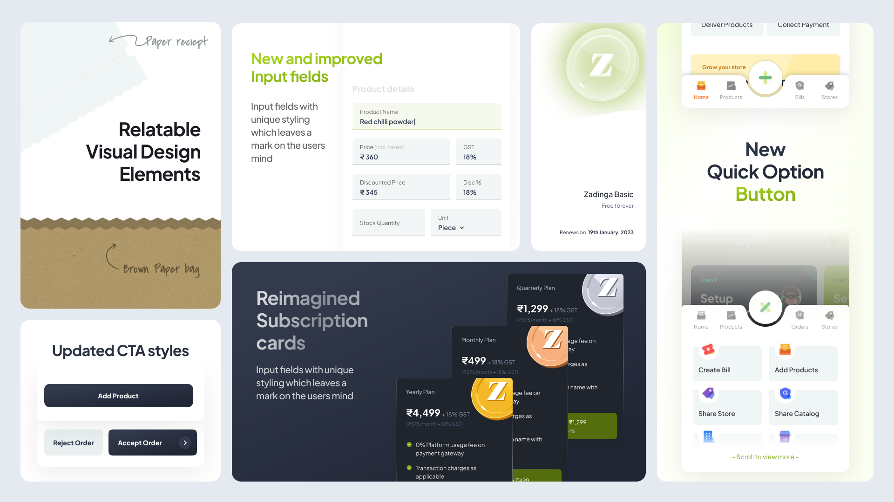
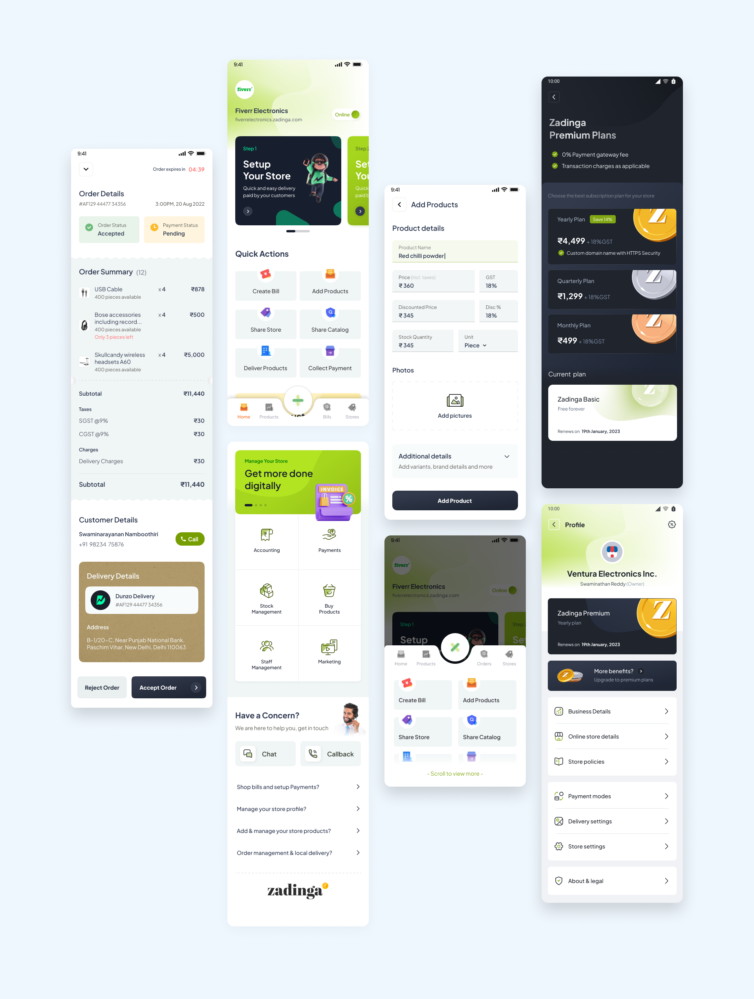
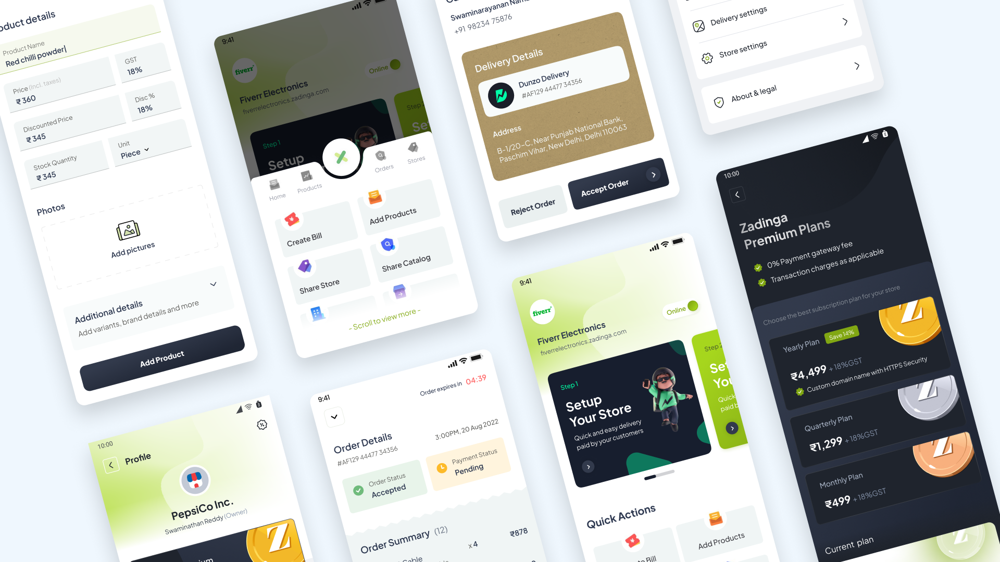

I joined an in-flight project at Thence as Design Guide, the craft and visual-system lead. My brief: set a new theme, codify it into a design system, and mentor the juniors carrying it forward. I owned the visual direction, the system, and five foundational screens, and built the client deck that justified the direction.

Color everywhere, meaning nowhere.
The app had color without a system, a dull grey and the brand green, reused everywhere. When every button is green, color stops signaling priority:
For a product with super-app ambitions, you can't scale an interface with no foundation beneath it.
I audited the existing UI for inconsistencies and benchmarked Swiggy and Dunzo for how mature apps use color with restraint. The insight: the problem wasn't a lack of color, it was a lack of meaning assigned to it.
A system where color carries signal.
"If every button is green, green stops meaning anything. Reserve the brand color for identity and key moments, and use a neutral for routine actions, so hierarchy and the brand both stay strong."
The argument I built into the client deck. It won over a client strict about protecting the green.
Reserve the brand green, drive actions with a neutral
So I made a counterintuitive call: reserve the brand green for identity and key moments, and drive routine primary actions with a neutral dark-grey gradient. I kept the green so the rebrand still felt like Zadinga, I just stopped spending it on everything.

Tap image to view full sizeFive screens that bootstrap the whole system
I applied the new theme to the five screens, Home, Order Summary, Profile, Plan Details, and a text-heavy internal form, chosen deliberately: together they hold 70–80% of the app's unique components, so redesigning them bootstrapped the whole system.
A spacing grid and one documented component set
Reserved green, dark-grey primary actions, a spacing grid to kill the clutter, and duplicate components collapsed into a single documented set.

Tap image to view full sizeCalmer screens, more reviews.
more app reviews after the redesign (reported by the product owner). The redesign was the primary release in that window, so the ~35% lift is credibly its own.
Primary actions became unmistakable and screens read calmer, but the deliverable that outlasts the metric was the theme and design system, handed off so the team could extend it without me.

Tap image to view full sizeWhat I'd do differently.
I'd close the evidence loop.
Baseline the rating before shipping and validate with even a lightweight round of Kirana-owner feedback, rather than leaning only on an audit and competitor benchmarks. A "35% more reviews" headline lands harder with a before-number.
Good design is often subtraction, and the most senior thing on a project isn't the pixels, it's the argument.
My biggest contribution wasn't the dark-grey button; it was defending it with a principle clear enough that a brand-protective client, whom I never spoke to directly, still said yes.